Vos vêtements parlent de vous.
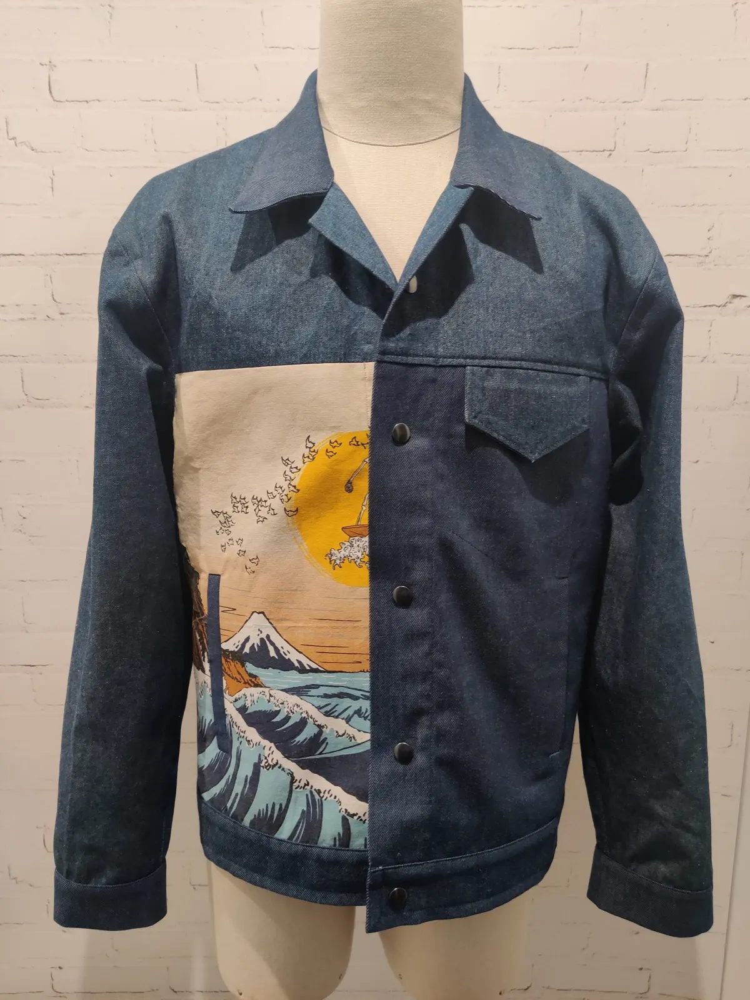
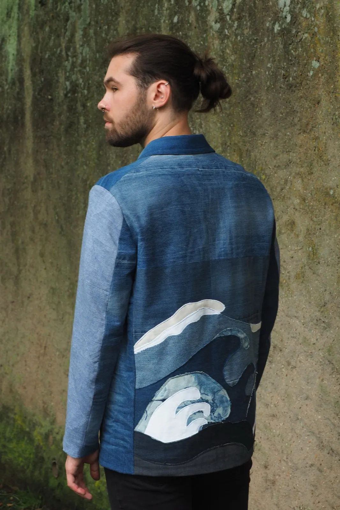
Aridepuis 2011
Créée en 2011, la marque Isaac Ari propose des vêtements de prêt-à-porter atypiques et confortables pour tout(e)s. Au croisement de la mode européenne et de l'influence asiatique, un style singulier qui reste facile à porter au quotidien.
- Marque créée en 2011
- Prêt-à-porter, sur-mesure, retouches
- Tissus dead stock et chinés
- Cousu à la main à Metz
- Cours de couture tous niveaux
Derrière la marque, un projet artisanal.
Une démarche créative assumée, teintée d'influences asiatiques autant que de l'envie de proposer une mode plus engagée, plus responsable et plus accessible que ce à quoi le secteur nous a habitués.
Du prêt-à-porter à la pièce sur-mesure, en passant par la customisation de vêtements existants, la démarche Isaac Ari repose sur une philosophie assumée : proposer une mode qui vous ressemble et qui respecte vos valeurs.
Kevin, couturier de l'atelier« Passionné de mode, d'art et de nature, j'avais à cœur de vous proposer une mode différente. Diplômé en Métier d'Art, je mets un point d'honneur à offrir une expérience de consommation responsable, en vous proposant des vêtements prêt-à-porter mais aussi sur mesure, réalisés localement et avec une sélection exigeante des matières. »
Fait chez Isaac Ari
Ce qui entre dans chaque pièce
- Matières
- Dead stock, tissus chinés, matières oubliées mais pleines de potentiel
- Confection
- À la main, à Metz
- Partenaires
- Certaines confections confiées à des ateliers d'insertion mosellans
- Style
- Mode européenne et influence asiatique, pour tout(e)s
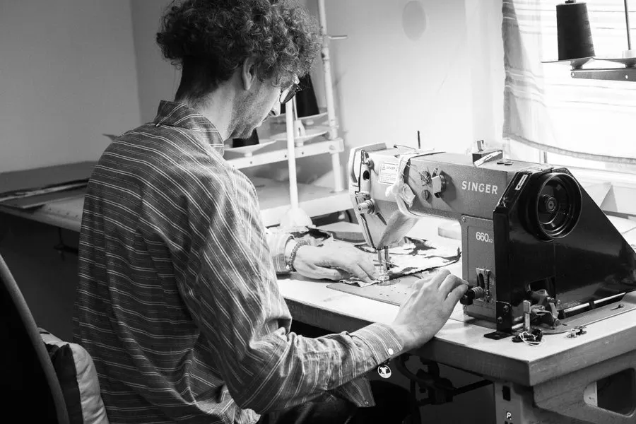
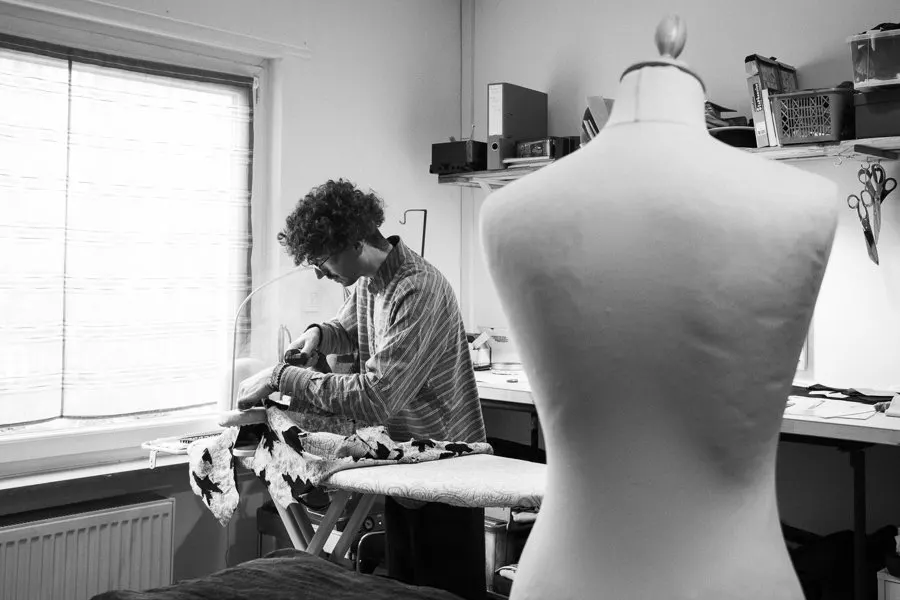
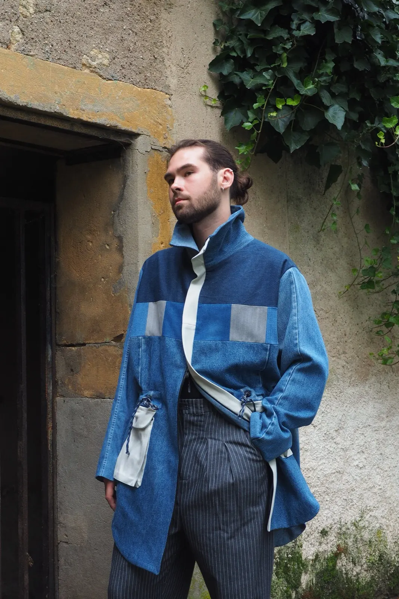
Parka réalisée à partir de chutes de jean. Pièce unique doublée, col montant, serrage à la taille par cordon, taille unique. Voir la parka
Des créations uniques, cousues dans les tissus chinés.
L'univers d'Isaac Ari s'exprime dans une sélection de créations originales, pensées et confectionnées avec soin à l'atelier, en fonction des tissus chinés. Des pièces singulières, pour affirmer votre style au quotidien.
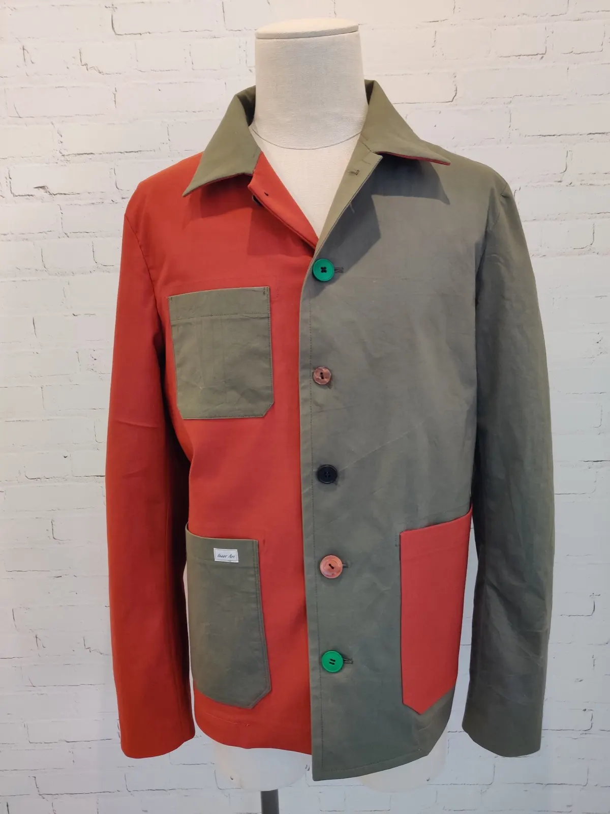
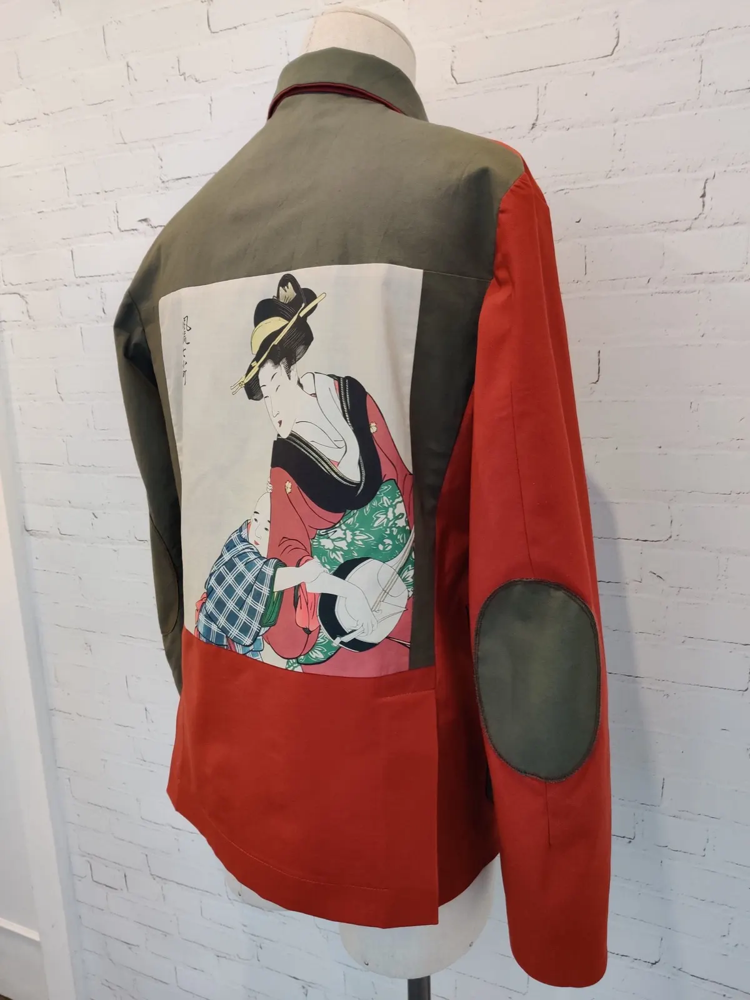
Veste de travail Japon. Bi-matière, idéale pour la demi-saison. Son dos est orné d'un ancien mouchoir japonais réemployé.
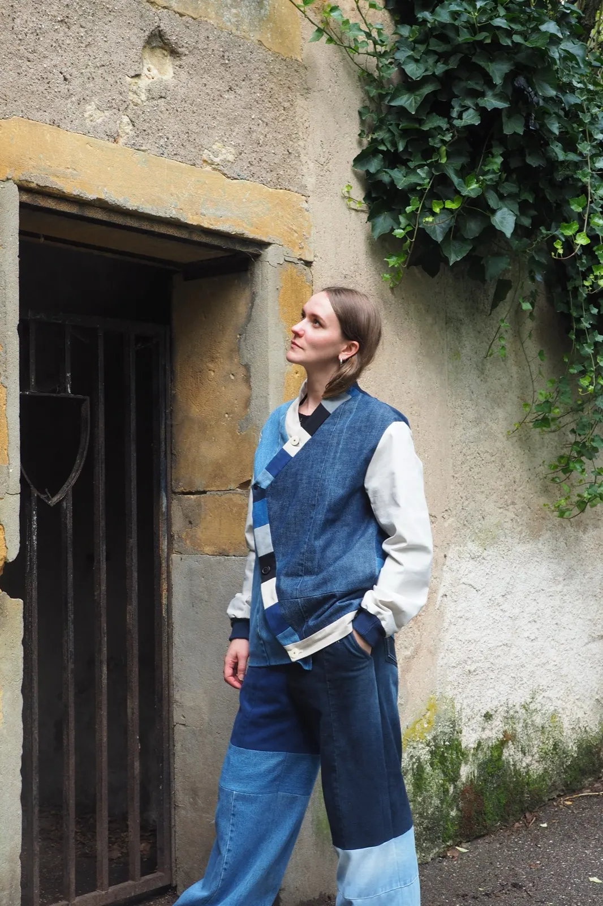
Donnez vie à un vêtement qui vous ressemble.
Ensemble, on définit la coupe, les matières, les couleurs et les finitions, selon vos envies ou l'occasion. La pièce est ensuite confectionnée à l'atelier, en tenant compte de votre morphologie et de vos préférences.
Confection sur-mesure
Un vêtement unique, pensé à votre image et parfaitement adapté à votre silhouette.
Retouches techniques
Ajustement d'une coupe, reprise délicate : ici, une retouche ne s'arrête pas à l'ourlet d'un pantalon. Envoyez vos projets les plus fous.
Transformation et customisation
Réutiliser le tissu d'un vieux manteau, customiser votre pantalon préféré, donner une seconde vie à un vêtement chiné.
Votre modèle prend vie à l'atelier, étape par étape
- 1
Définition du projet
- 2
Choix de la forme, des couleurs et des matières
- 3
Réalisation du patron
- 4
Essayages et ajustements
- 5
Dernières finitions
« J'ai plusieurs créations Isaac Ari depuis presque 10 ans : la qualité des tissus et des coutures est toujours impeccable. »
Jul, client(e) de l'atelier
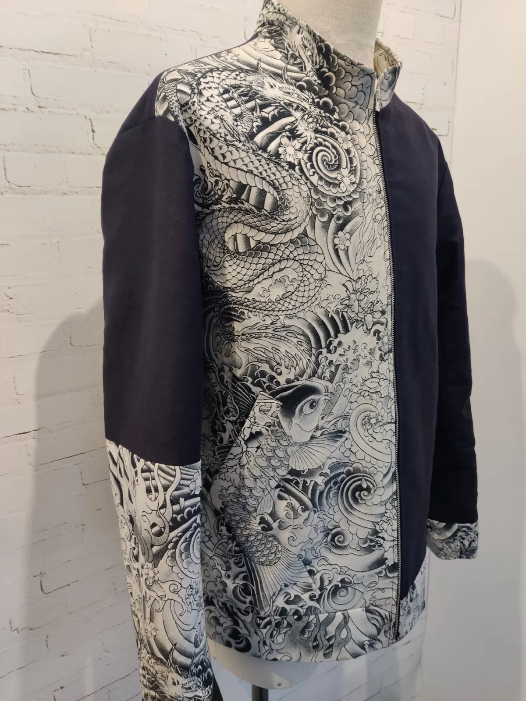
Découvrez le plaisir de coudre.
Envie de découvrir la couture ou de développer votre savoir-faire ? À l'atelier, chacun avance pas à pas, selon son niveau et ses envies, dans une atmosphère chaleureuse et décontractée.
- Pour tous les niveaux, de l'initiation aux projets ambitieux et techniques
- Seul ou en petit comité de 2 à 4 personnes
- Encadré par Kevin, couturier professionnel
Cours collectif
23 €2 h, 4 places au plus, matériel fourni
Mardi et jeudi, 9 h à 11 h
Mercredi, 18 h 30 à 20 h 30
Cours individuel
40 €2 h, initiation et suivi de projet
Jeudi, 18 h à 20 h
Les cours ont lieu à l'atelier d'Isaac Ari à Bliiida, 7 avenue de Blida, 57000 Metz. Cours hors les murs et sur-mesure possibles, sur devis.
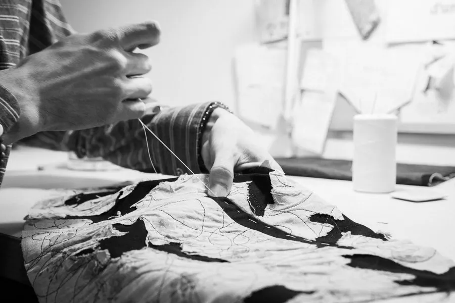
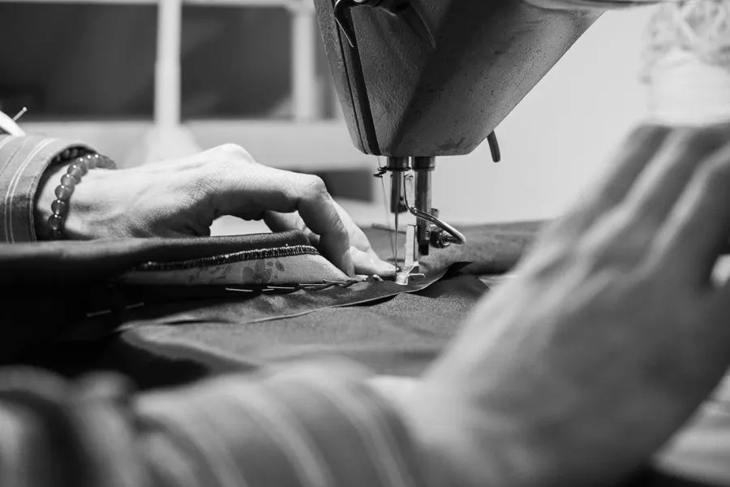
Un projet en tête ?
Une pièce sur-mesure, une retouche, une transformation ou un cours : parlons de vos envies ensemble et faisons-en une réalité.
- Téléphone
- 06 79 75 91 30
- isaacari@hotmail.fr
- Adresse
- 98 rue de Castelnau
57000 Metz - Lieu des cours
- Bliiida, 7 avenue de Blida
57000 Metz - Formulaire et Instagram
- Formulaire de contact
Instagram, salons et événements